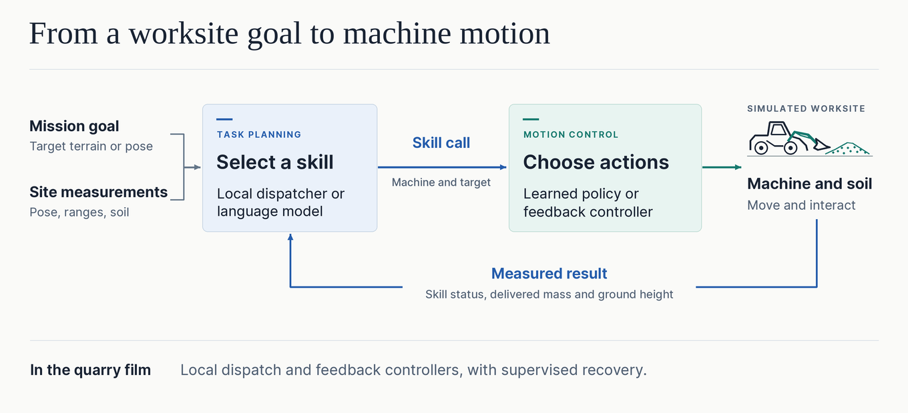
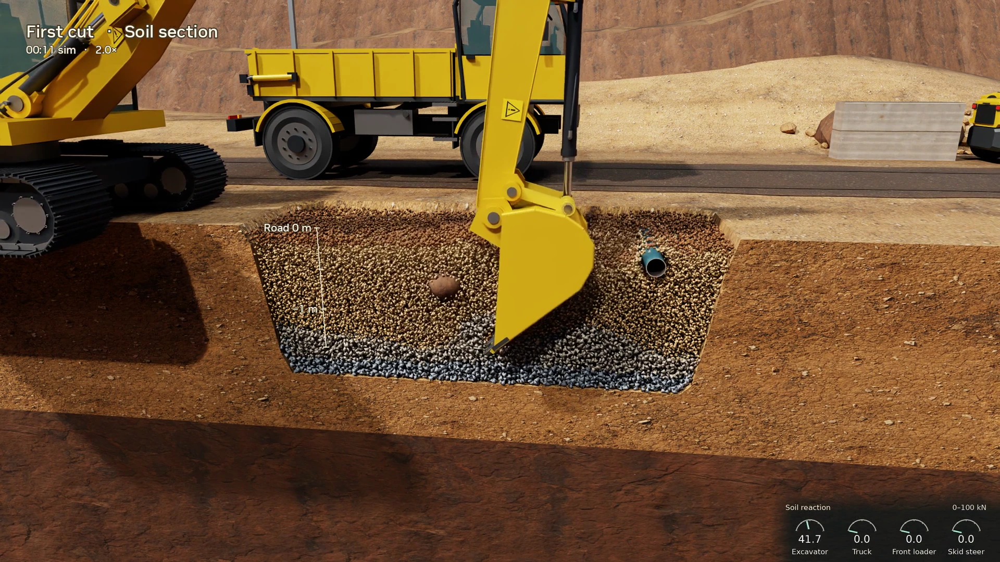
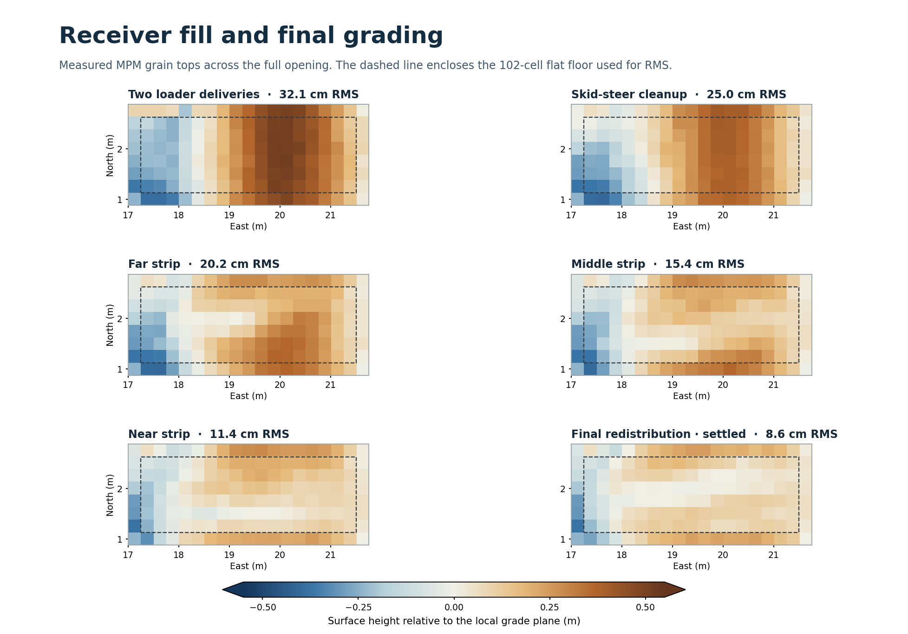

Research preview ·
Moving earth with AMMI
Autonomous Material Moving Intelligence studies how machines can work toward one terrain goal. In this simulated quarry, the job is to fill a pit to road level. Each machine must work on the ground the last one left behind.
How the fleet decides what to do
A mission defines where soil should come from, where it should go, and which machines share a work area. The planner chooses a ready job, such as sending the truck to the pit. The truck controller steers and brakes the loaded vehicle, then reports its arrival. A separate tipping skill raises the bed and measures how much soil reached the pit. The planner uses those measurements to choose the next job.


What can the planner ask?
- Inspect the site
- Check machine positions, payloads and progress. A ground survey shows where the pit surface lies above or below the target.
- Find a ready skill
- See which jobs the fleet can start. The skid steer can wait for the truck to leave their shared approach.
- Run a skill
- Give one machine a job and a time budget. Its controller reports what happened, including an obstruction or a load that missed the receiver.
- Stop
- End dispatch between jobs and record the reason. A machine can also interrupt its own movement when it encounters an obstacle.
Machine control. The quarry film uses a local dispatcher and feedback controllers. In a separate three-machine test, the GPT‑6.2 Sol planner dispatched a truck after the excavator reported 192 kg in its bed. The truck delivered 190 kg and cleared the bay before the skid steer entered.
Robot learning. A separate excavator policy learns to cut, curl and lift using proximal policy optimization (PPO). It observes joint motion and nearby terrain. Fast analytical soil supports repeated training, and particle simulation tests whether the bucket retains material under contact.
The worksite in action
Isaac Lab and Newton simulate the vehicles and layered soil together. The material point method (MPM) follows the soil as it moves and feeds contact forces back to the machines. The excavator and truck supply the first loads. The front loader adds two stockpile loads, the skid steer pushes overflow into the pit in three passes, and the excavator grades the surface. A moving visual section exposes the buried layers during the cut. The simulator keeps the entire bed present throughout. The pipe contact interrupts the dig. The bucket backs away before the next cut. The simulated bucket-to-pipe contact registers 26.2 kN. All reported loads are simulated masses measured from the material points. Each clip comes from the continuous run above.
Dig and lift
The excavator curls into the second cut after clearing the buried pipe. Its raised buckets hold 2,610 and 2,689 kg of soil. Across the two scoops, 3 raised boulders reach the articulated truck bed. A 3D survey estimates that the two raised buckets are 99.2% and 92.9% occupied by grains and boulders. Material heaped above its rim is outside this measurement.
Open clip · 20 sTip and clear the pit
The truck tips the excavated soil toward the receiving pit, lowers its bed and moves 3.08 m forward on the hardstand to clear the working area. See the measured truck path.
Open clip · 14 s
Gather a stockpile load
The loader advances into the stockpile, curls, and reverses with its bucket raised. It lifts 1.66 and 1.56 tonnes on its two trips to the pit. At delivery, 1,506 kg of the first bucket's tracked soil and 541 kg of the second bucket's tracked soil reach the receiver. The loader meters its second tip, then rolls the bucket back with 0.88 t in reserve. It returns 739 kg of that reserve to the stockpile.
Open clip · 11 sRecover apron spill
The skid steer scrapes three separate strips toward the pit. The measured spill goes from 1,353 kg outside the pit before the first pass to 721 kg after the last pass.
Open clip · 8 sGrade the fill
The excavator grades the far side first, then the middle and near edge. A fourth diagonal sweep redistributes the remaining high spot before the bucket lifts clear.
Open clip · 10 sThe hole left by the bucket
The borrow bed measures 5.74 × 4.76 m at road level. Low, tapered ridges cross the topsoil above broad, undulating sand and gravel layers and a fractured-rock base. The surface starts close to road grade. The lowest bucket steel reaches 1.45 and 1.46 m below road level during the two digs. At maximum depth, the steel still clears the rigid foundation by 0.43 and 0.42 m. From one fixed camera, the two cuts reveal the depression left in the granular bed. On a 22 cm grid, the deepest local lowering reaches 0.58 m after one cut and 0.90 m after two. After both cuts, 3.97 m² lies at least 50 cm below its initial surface. The lowest surveyed surface after both cuts is 0.99 m below road level. The survey uses the third-highest grain in each column to reduce the influence of isolated flying grains.




Where the soil settles
The simulation tracks 612,993 material points. After grading and settling, 102 of the 102 cells on the central pit floor contain soil. Each cell measures 25 × 25 cm. On that central floor, the truckload and two front-loader placements close 96% of the original surface deficit. Cleanup and grading bring this to 99%. The survey compares the soil surface in each cell with road elevation.
- 7.49 t
- Tracked soil settled in the receiver
- 8.6 cm
- Central floor RMS height error
- 71 / 102
- Central cells within 10 cm of road grade


The machines
- Tracked excavator
- Cuts and curls a load, swings to the truck, and sweeps loose soil with the side of its bucket.
- Dump truck
- Hauls the excavated loads to the pit, reverses into its tipping position and lowers its bed after discharge. After discharge it pulls 3.08 m onto the gravel. Over the rest of the shift its chassis moves at most 0.34 m from the end of that maneuver. A parking check paused grading. A supervised brake check confirmed that all four wheels were supported and the empty bed was latched before grading resumed.
- Articulated wheel loader
- Steers at the chassis joint, fills its bucket at the stockpile and transports material to the pit.
- Skid steer
- Scrapes narrow strips of spilled soil from the apron and pushes them over the lip of the pit. On the first approach, the rear bodywork extends beyond its collision hull and briefly clips a concrete divider by about 15 cm.
- Grab crane · separate port scene
- Closes a clamshell grab in a ship’s hold, hoists and swings the load, then opens it above a shore hopper.
No code is being released. Updates will follow soon.